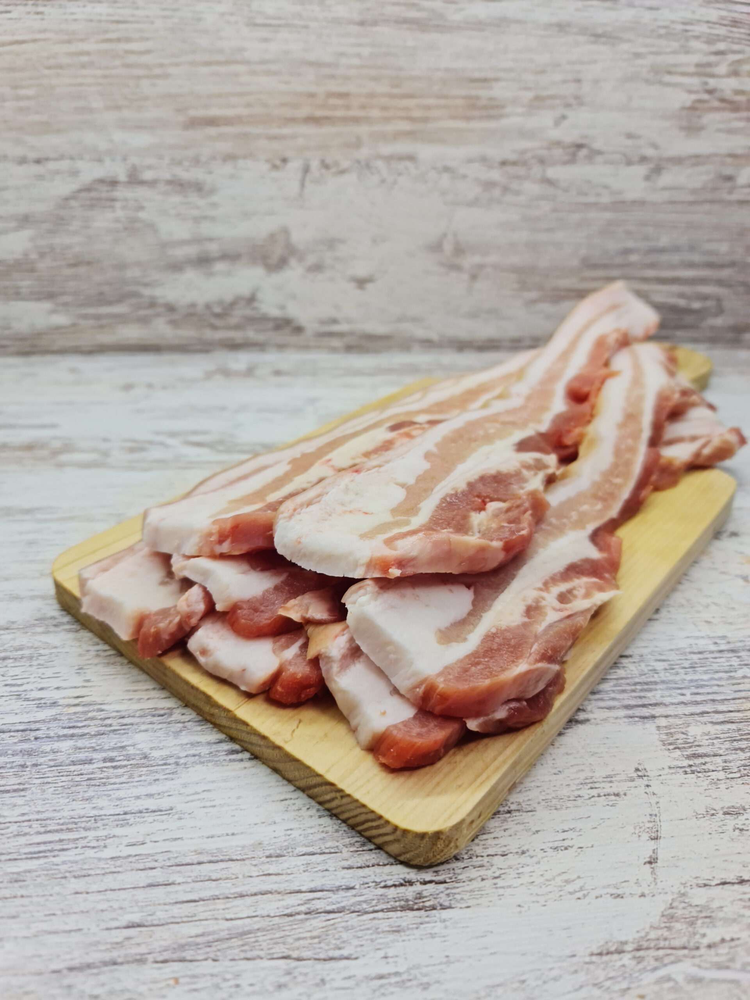
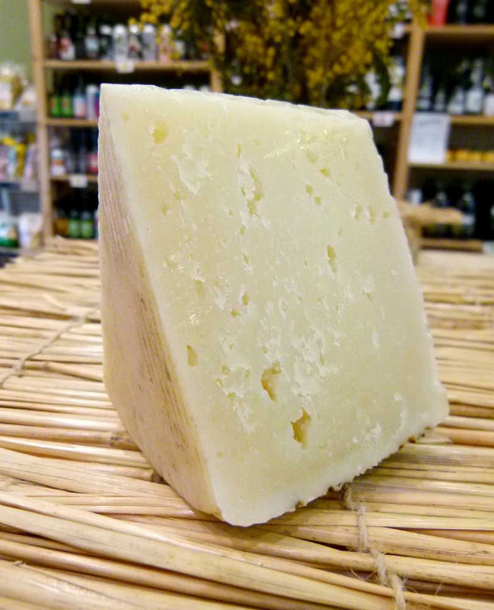
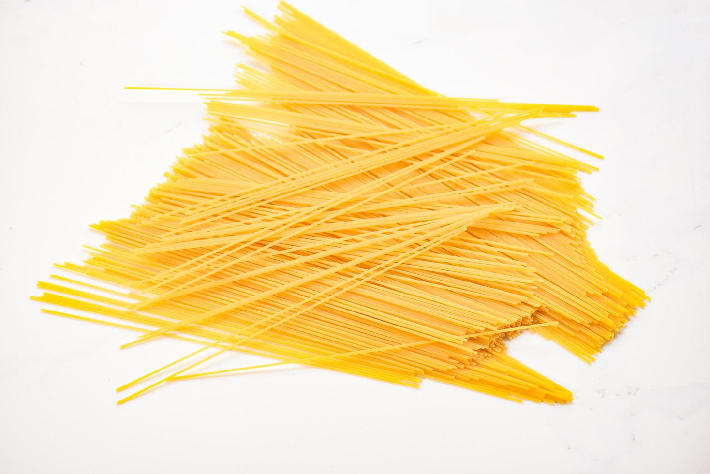
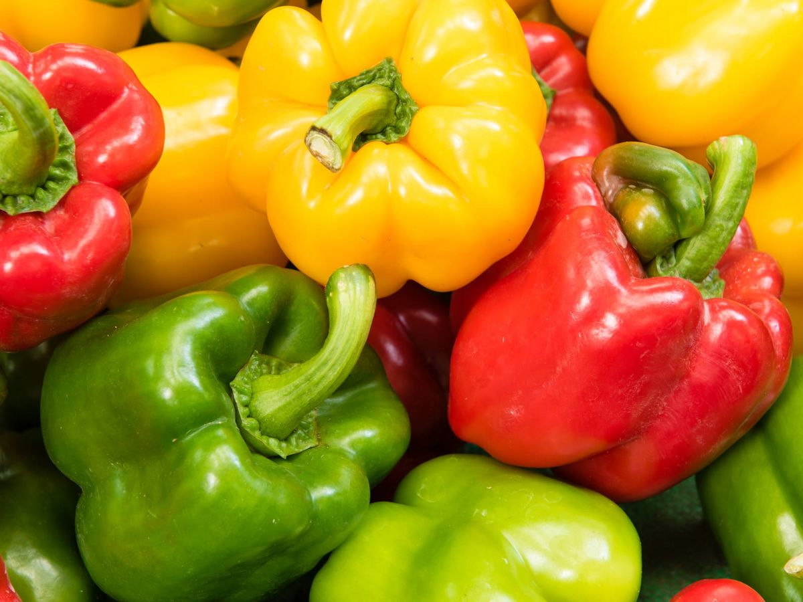
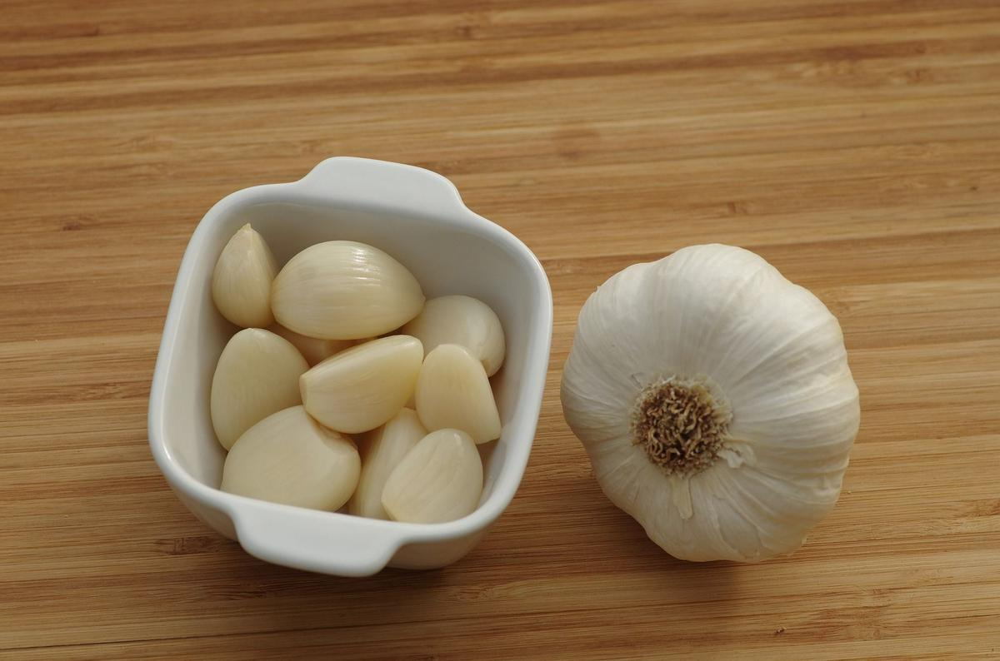
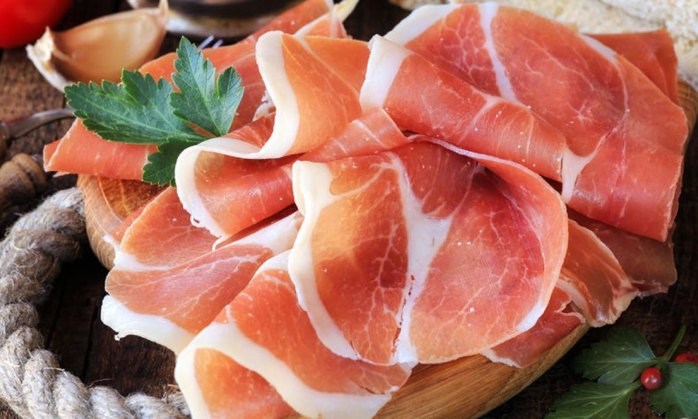
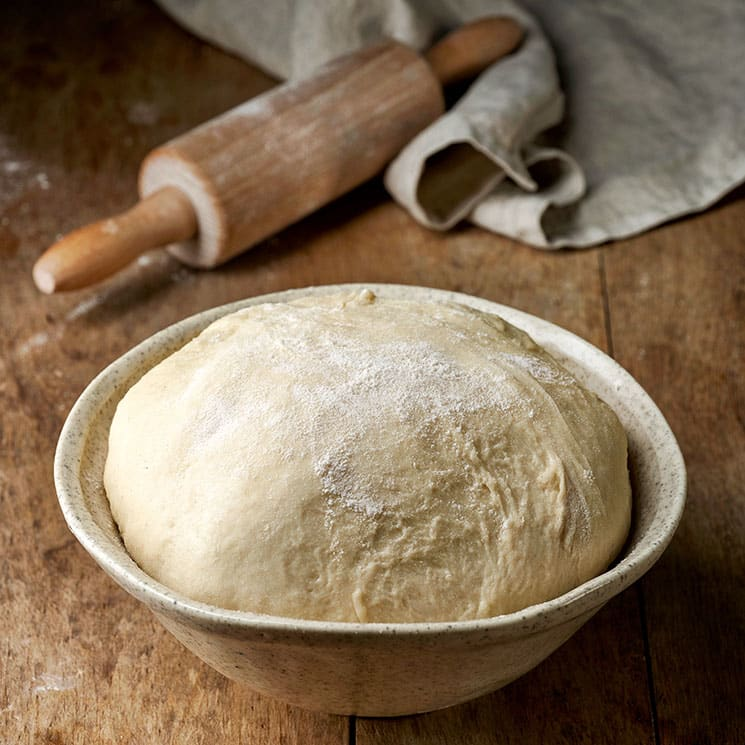
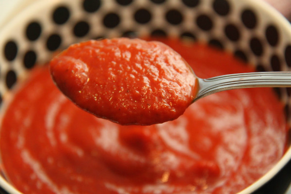
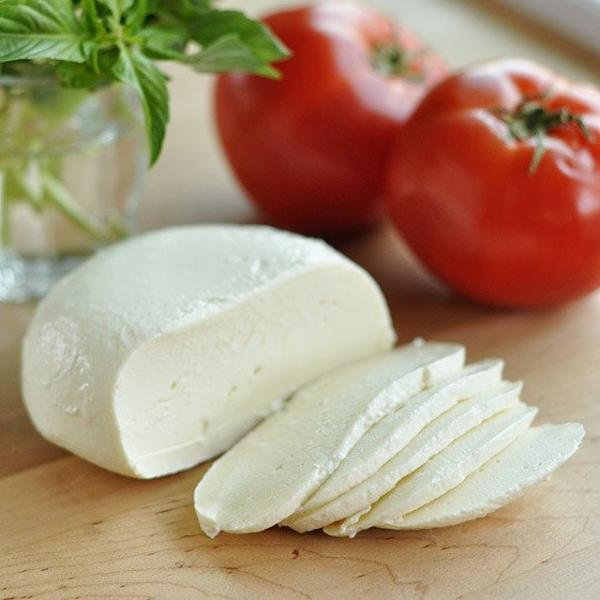
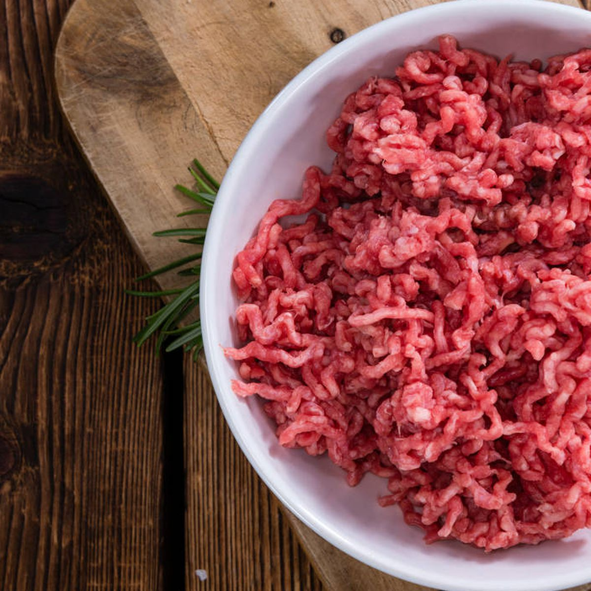

Pasatiempos
- Videojuegos
- Películas
- Viajar
- Series
- Leer
Comidas
- Hamburguesa
- Kebab
- Arroz al horno
- Espaguetis a la carbonara
- Pizza
Definiciones
- Memoria RAM
- La memoria de acceso aleatorio es una memoria de almacenaje a corto plazo. El sistema operativo de ordenadores u otros dispositivos utiliza la memoria RAM para guardar de forma temporal todos los programas y sus procesos de ejecución.
- Memoria ROM
- La memoria de solo lectura se utiliza para almacenar datos que no cambian o que lo hacen poco en el tiempo, como por ejemplo el sistema de arranque del dispositivo o BIOS.
- Disco duro
- Es un dispositivo de almacenamiento de datos que emplea un sistema de grabación magnética para almacenar y recuperar archivos digitales.
- Placa base
- Es una tarjeta de circuito impreso a la que se conectan los componentes que constituyen el PC.
- Chipset
- Un chipset es el conjunto de circuitos integrados diseñados con base en la arquitectura de un procesador, permitiendo que ese tipo de procesadores funcionen en una placa base.
Recetas
- Espaguetis a la carbonara
Ingredientes
- 3 Yemas de huevo
- 1 Huevo
- 100g Panceta
- 50g Queso pecorino
- Pimienta negra
- 320g Espaguetis
Pasos
- Corta la panceta, o el beicon, en tiras pequeñas y dóralas en la sartén.
- Bate los huevos en un recipiente y añade el queso rallado y la pimienta, hasta que quede una textura cremosa.
- Añade la pasta al dente a la salsa y mezcla.
- Agrega el beicon, todavía caliente, a la mezcla y ¡sirve!

- Huevos al plato con verduras y jamón
Ingredientes
- 4 huevos
- 2 pimientos rojos
- 150 gramos de judías verdes
- 2 cebollas
- 1 diente de ajo
- 8 lonchas de jamón serrano
- 50 mililitros de caldo de verduras
- Aceite de oliva
- Pimentón
- Sal
- Pimienta
Pasos
- Asa y pela los pimientos: Limpia los pimientos, lávalos y ásalos 50 minutos en el horno precalentado a 200º. Tápalos, deja que se templen y retírales la piel y las semillas. Córtalos en tiras, reservando los jugos que suelten.
- Cuece las judías: Lava y despunta las judías. Trocéalas, cuécelas al vapor 8 minutos (deben quedar un poco al dente) y escúrrelas.
- Rehoga la cebolla: Pela la cebolla y el ajo y pícalos. Rehoga la primera 10 minutos en 3 cucharadas de aceite. Añade el ajo, rehoga 2 minutos y agrega las judías, el pimiento con sus jugos de cocción y el caldo. Cuece 5 minutos y salpimienta.
- Casca un huevo y hornea: Reparte el jamón en cazuelitas refractarias, añade el sofrito y casca 1 huevo en el centro. Salpimienta, espolvorea con pimentón y hornea 10 minutos a 180º, hasta que las claras se cuajen y las yemas queden líquidas.

- Pizza barbacoa
Ingredientes
- Masa de pizza
- Tomate frito
- Salsa barbacoa
- Mozzarella
- 1 filete de pollo
- 150g de carne picada
- 3-4 lonchas de beicon
Pasos
- Podemos hacer la masa fresca pero yo la compro ya hecha. Si la compráis hecha, estiradla bien en una bandeja de horno con papel de horno.
- Ponemos a partes iguales salsa barbacoa y salsa de tomate.
- Cubrimos con queso rallado.
- Picamos el filete de pollo y el beicon. Cubrimos la pizza con la carne, beicon y el pollo. Metemos al horno 15 minutos a 220º o hasta que esté crujiente.
